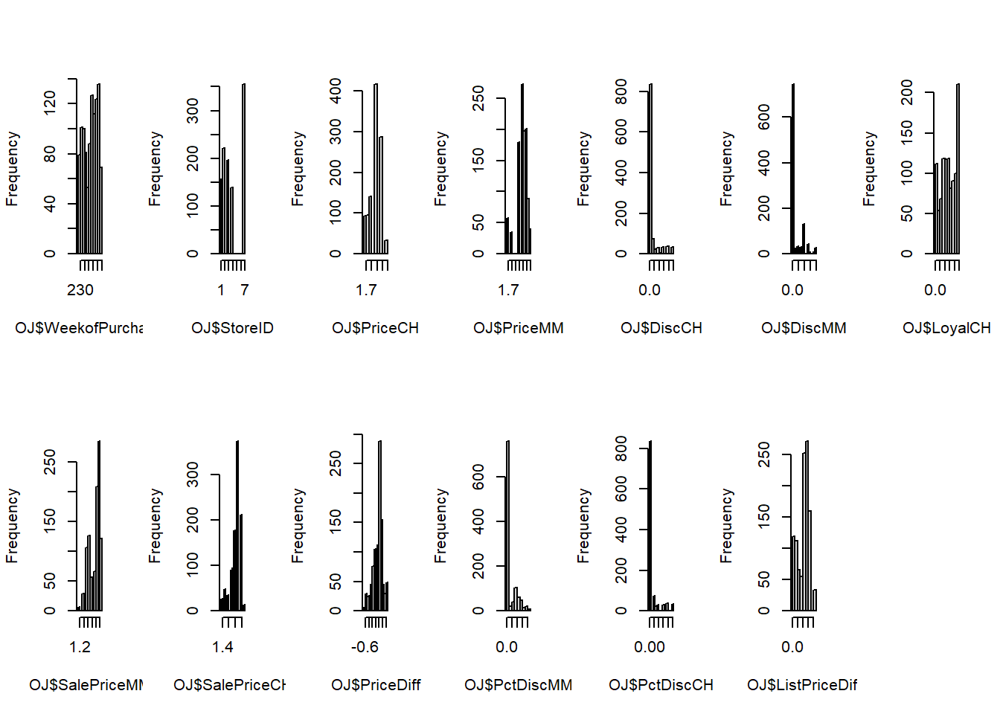

Los datos contienen 1070 compras en las que el cliente compró Citrus Hill o Minute Maid Orange Juice. Se registran una serie de características del cliente y del producto. El objetivo del conjunto de datos es predecir qué zumo se compró.
Tenemos 6 variables categóricas, una de ellas un factor las demás escritas como números discretos. Por otro lado tenemos 11 variables numéricas.
Cargamos las librerías y vemos los datos, así como su resumen.
Purchase WeekofPurchase StoreID PriceCH PriceMM
CH:653 Min. :227.0 Min. :1.00 Min. :1.690 Min. :1.690
MM:417 1st Qu.:240.0 1st Qu.:2.00 1st Qu.:1.790 1st Qu.:1.990
Median :257.0 Median :3.00 Median :1.860 Median :2.090
Mean :254.4 Mean :3.96 Mean :1.867 Mean :2.085
3rd Qu.:268.0 3rd Qu.:7.00 3rd Qu.:1.990 3rd Qu.:2.180
Max. :278.0 Max. :7.00 Max. :2.090 Max. :2.290
DiscCH DiscMM SpecialCH SpecialMM
Min. :0.00000 Min. :0.0000 Min. :0.0000 Min. :0.0000
1st Qu.:0.00000 1st Qu.:0.0000 1st Qu.:0.0000 1st Qu.:0.0000
Median :0.00000 Median :0.0000 Median :0.0000 Median :0.0000
Mean :0.05186 Mean :0.1234 Mean :0.1477 Mean :0.1617
3rd Qu.:0.00000 3rd Qu.:0.2300 3rd Qu.:0.0000 3rd Qu.:0.0000
Max. :0.50000 Max. :0.8000 Max. :1.0000 Max. :1.0000
LoyalCH SalePriceMM SalePriceCH PriceDiff Store7
Min. :0.000011 Min. :1.190 Min. :1.390 Min. :-0.6700 No :714
1st Qu.:0.325257 1st Qu.:1.690 1st Qu.:1.750 1st Qu.: 0.0000 Yes:356
Median :0.600000 Median :2.090 Median :1.860 Median : 0.2300
Mean :0.565782 Mean :1.962 Mean :1.816 Mean : 0.1465
3rd Qu.:0.850873 3rd Qu.:2.130 3rd Qu.:1.890 3rd Qu.: 0.3200
Max. :0.999947 Max. :2.290 Max. :2.090 Max. : 0.6400
PctDiscMM PctDiscCH ListPriceDiff STORE
Min. :0.0000 Min. :0.00000 Min. :0.000 Min. :0.000
1st Qu.:0.0000 1st Qu.:0.00000 1st Qu.:0.140 1st Qu.:0.000
Median :0.0000 Median :0.00000 Median :0.240 Median :2.000
Mean :0.0593 Mean :0.02731 Mean :0.218 Mean :1.631
3rd Qu.:0.1127 3rd Qu.:0.00000 3rd Qu.:0.300 3rd Qu.:3.000
Max. :0.4020 Max. :0.25269 Max. :0.440 Max. :4.000
Estudiemos como es la variable storeID, hay 5 posibles tiendas.
unique(OJ$StoreID)
[1] 1 7 2 3 4
Esto nos dice que hay variables que contienen la misma información y tendremos que modificar los datos para mejorar su calidad. Ahora veremos como se distribuyen las variables.
par(mfrow=c(2,7))hist(OJ$WeekofPurchase, main ="")hist(OJ$StoreID, main ="")hist(OJ$PriceCH, main ="")hist(OJ$PriceMM, main ="")hist(OJ$DiscCH, main ="")hist(OJ$DiscMM, main ="")hist(OJ$LoyalCH, main ="")hist(OJ$SalePriceMM, main ="")hist(OJ$SalePriceCH, main ="")hist(OJ$PriceDiff, main ="")hist(OJ$PctDiscMM, main ="")hist(OJ$PctDiscCH, main ="")hist(OJ$ListPriceDiff, main ="")

Fijandonos podemos observar caracteristicas de las variables Vemos como las distribuciones suelen estar concentradas en torno a un valor que destaca más que el resto.
Eliminamos las varibales Store7 y STORE porque esta información ya está contenida en StoreID:
Warning in lda.default(x, grouping, ...): variables are collinear
Warning in lda.default(x, grouping, ...): variables are collinear
Warning in lda.default(x, grouping, ...): variables are collinear
Warning in lda.default(x, grouping, ...): variables are collinear
Warning in lda.default(x, grouping, ...): variables are collinear
precisionLDA <-mean(as.numeric(listaprecisiones))cat("\nPrecision media validacion cruzada LDA:",precisionLDA)
Precision media validacion cruzada LDA: 0.8224194
cat("\nError medio validacion cruzada LDA:",1-precisionLDA)
En el caso del discriminante cuadrático (QDA) necesitamos que las variables no estén correlacionadas. Para ello tenemos que eliminar gran parte de ellas. Además mostramos un gráfico de las correlaciones restantes.
En el caso de k-vecinos más próximos primer calculamos el k-indicado con la validación cruzada y posteriormente lo probamos con el conjunto de prueba con el k que mejor resultado nos aporta.
Warning in predict.lm(object, newdata, se.fit, scale = 1, type = if (type == :
prediction from rank-deficient fit; attr(*, "non-estim") has doubtful cases
Warning in predict.lm(object, newdata, se.fit, scale = 1, type = if (type == :
prediction from rank-deficient fit; attr(*, "non-estim") has doubtful cases
Warning in predict.lm(object, newdata, se.fit, scale = 1, type = if (type == :
prediction from rank-deficient fit; attr(*, "non-estim") has doubtful cases
Warning in predict.lm(object, newdata, se.fit, scale = 1, type = if (type == :
prediction from rank-deficient fit; attr(*, "non-estim") has doubtful cases
Warning in predict.lm(object, newdata, se.fit, scale = 1, type = if (type == :
prediction from rank-deficient fit; attr(*, "non-estim") has doubtful cases
indice<-which.max(listaprecisiones)mejormodelo <- listamodelos[[indice]]predicciones <-predict(mejormodelo, type ='response', newdata = test_set)
Warning in predict.lm(object, newdata, se.fit, scale = 1, type = if (type == :
prediction from rank-deficient fit; attr(*, "non-estim") has doubtful cases
A continuación para support vector machines, probamos con distintos núcleos y usamos cross=5 para realizar la validación cruzada. El hecho de calcular los valores apropiados para cada núcleo aumenta mucho el tiempo de computación.
Después de ver los resultados basados en la métrica eligida(precisión), eligiríamos la regresión logística pues es el modelo que menor error comete. Por otro lado también podríamos usar la discriminación lineal pues la diferencia entre los dos resultados es muy pequeña.
A la horaa de implementar el modelo en la realidad la elección dependería de cómo se toman los datos y de la velocidad de resolución de modelo. A priori podemos pensar que LDA es más rápido por su sencillez pero puede dar algún problema con las correlaciones de las variables.